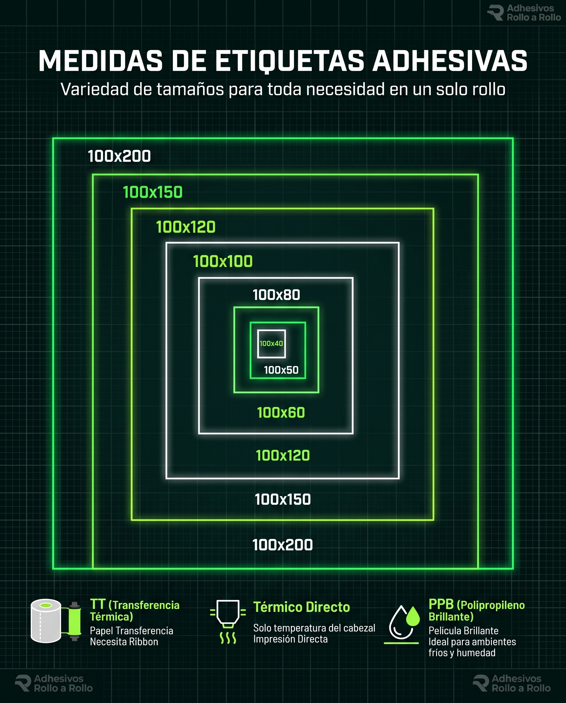

Ribbon Cera Estándar
Ideal para papel litográfico y etiquetas de transferencia térmica estándar (110 mm x 74 m / 110 mm x 300 m).
Selecciona el tamaño estándar o solicita tu rollo con medidas personalizadas en transferencia térmica (TT), térmico directo o polipropileno brillante (PPB).

Rollos de cinta de impresión para código de barras y rotulado de alta fijación.
Ideal para papel litográfico y etiquetas de transferencia térmica estándar (110 mm x 74 m / 110 mm x 300 m).
Máxima adherencia frente a fricción, humedad y químicos. Compatible con polipropileno (PPB) y nylon textil.
Insumos textiles resistentes a procesos de lavado industrial, tintorería y planchado.
Rollos en anchos estándar de 25 mm, 30 mm y 35 mm, aptos para marquillas en confección.